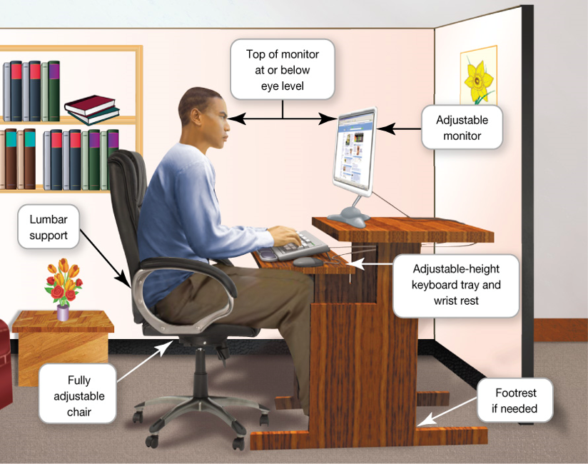

Computer Architecture
Ergonomics
☛ Ergonomics refers to how you set up your computer and other equipment to minimize your risk of injury or discomfort.
☛ Guidelines:
↳ Position your monitor correctly.
↳ Purchase an adjustable chair.
↳ Assume a proper position while typing.
↳ Take breaks from computer tasks.
↳ Ensure that the lighting is adequate.
